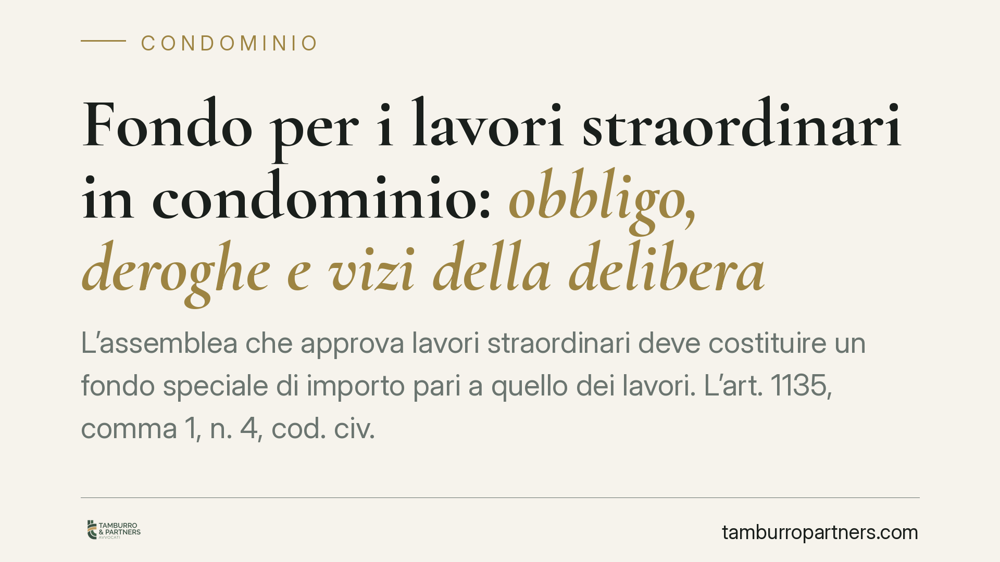

Fondo per i lavori straordinari in condominio: obbligo, deroghe e vizi della delibera
L'assemblea che approva lavori straordinari deve costituire un fondo speciale di importo pari a quello dei lavori. L'art. 1135, comma 1, n. 4, cod. civ. lo impone, ma la portata dell'obbligo e le conseguenze della sua violazione restano discusse. Vediamo il quadro normativo, la deroga per i pagamenti a stato di avanzamento e cosa rischia davvero la delibera carente.

Il fatto
Quando l'assemblea approva opere straordinarie — rifacimento del tetto, consolidamento delle facciate, sostituzione dell'impianto di riscaldamento — deve, secondo la legge, mettere da parte le risorse necessarie prima di dare avvio ai lavori. La ragione è pratica: tutelare l'impresa appaltatrice e i condòmini da un cantiere avviato senza copertura finanziaria.
Nella prassi, però, molte delibere omettono o riducono la costituzione del fondo. Da qui il dubbio ricorrente: una delibera di questo tipo è valida? E in che termini può essere contestata?
Inquadramento normativo
L'obbligo nasce dall'art. 1135, comma 1, n. 4, cod. civ., introdotto dalla riforma del condominio (L. 220/2012). La norma prevede che l'assemblea, quando delibera opere di manutenzione straordinaria e innovazioni, costituisca «un fondo speciale di importo pari all'ammontare dei lavori».
Lo stesso numero 4 contiene però una deroga rilevante: se i lavori devono essere eseguiti in base a un contratto che prevede il pagamento graduale in funzione dello stato di avanzamento (il cosiddetto pagamento a SAL), il fondo può essere costituito «in relazione ai singoli pagamenti dovuti». In altri termini, non occorre vincolare subito l'intero importo, ma solo la quota corrispondente a ciascuna tranche contrattuale.
Resta aperta la questione più delicata: quale vizio colpisce la delibera che il fondo non lo costituisce affatto. Il tema va affrontato alla luce della distinzione tracciata dalle Sezioni Unite della Cassazione (Cass. SU n. 9839/2021), che ha ridisegnato i confini tra nullità e annullabilità delle delibere condominiali. Secondo quell'insegnamento, sono nulle le delibere con oggetto impossibile o illecito, o lesive di diritti individuali indisponibili; sono invece annullabili — e vanno impugnate nel termine di 30 giorni ex art. 1137 cod. civ. — i vizi procedimentali o di contenuto che non raggiungano quella soglia.
Alla luce di questo quadro, l'idea che la mancata costituzione del fondo renda la delibera automaticamente nulla, impugnabile senza termini e rilevabile d'ufficio, non può essere presentata come un dato pacifico. Si tratta di una violazione che, nella maggior parte dei casi, attiene al procedimento e al contenuto della decisione, e che una lettura coerente con le Sezioni Unite riconduce più ragionevolmente all'area dell'annullabilità. Chi intende contestarla ha quindi interesse a muoversi nei 30 giorni, senza confidare in un'impugnazione sine die.
Implicazioni pratiche
La qualificazione del vizio non è un dettaglio teorico: cambia i tempi e l'esito del contenzioso.
Se la delibera è annullabile e nessuno la impugna entro 30 giorni, essa resta pienamente efficace. Può quindi costituire titolo per la riscossione dei contributi: l'amministratore, ai sensi dell'art. 63 disp. att. cod. civ., può ottenere un decreto ingiuntivo immediatamente esecutivo nei confronti del condòmino moroso. Chi non ha impugnato nei termini non potrà più dolersi, in quella sede, della mancata costituzione del fondo.
Se invece — in ipotesi specifiche e più circoscritte — si configurasse una nullità, la delibera non produrrebbe effetti e il vizio sarebbe deducibile senza limiti di tempo. Ma su questo esito, come detto, la giurisprudenza non è univoca: affidarvisi è un rischio.
Quanto allo sconto in fattura e alla cessione del credito, si tratta di un tema oggi largamente residuale. Il D.L. n. 11/2023 ha bloccato in via generale l'esercizio di tali opzioni, salvo ipotesi eccezionali e regimi transitori. L'argomento secondo cui, grazie a questi meccanismi, il fondo potrebbe non essere necessario ha quindi perso gran parte della sua attualità e va valutato caso per caso, verificando se l'intervento rientri in una delle eccezioni ancora ammesse.
Cosa fare in concreto
- Per l'amministratore: inserire a verbale la costituzione del fondo contestualmente all'approvazione dei lavori, indicando importo e modalità; se il contratto prevede pagamenti a SAL, dare atto espressamente della deroga ex art. 1135 n. 4 e commisurare il fondo alle singole tranche.
- Per l'amministratore: verificare la copertura finanziaria prima di stipulare l'appalto, così da non esporre il condominio a responsabilità verso l'impresa.
- Per il condòmino dissenziente: se ritiene viziata la delibera, non attendere; valutare l'impugnazione entro i 30 giorni dell'art. 1137 cod. civ., considerando l'orientamento prevalente in tema di annullabilità.
- Per il condòmino moroso: ricordare che una delibera non impugnata nei termini resta titolo valido per il decreto ingiuntivo ex art. 63 disp. att. cod. civ.
- Per entrambi: prima di invocare presunte deroghe legate a sconto in fattura o cessione del credito, verificare l'attuale ammissibilità alla luce del D.L. 11/2023.
Consigliamo di far esaminare il verbale assembleare e il contratto d'appalto prima dell'avvio del cantiere, così da individuare per tempo eventuali profili di invalidità.
Ogni condominio ha una storia a sé.
Se gestisci un'amministrazione e vuoi un confronto su una specifica questione condominiale, scrivi allo studio. Ti rispondiamo entro un giorno lavorativo.